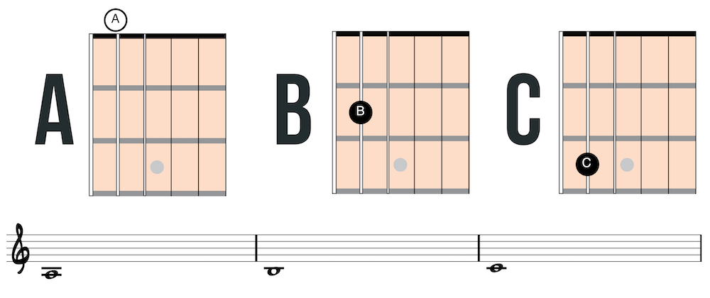
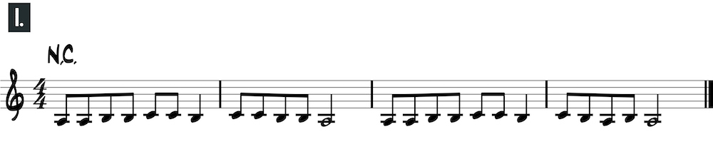
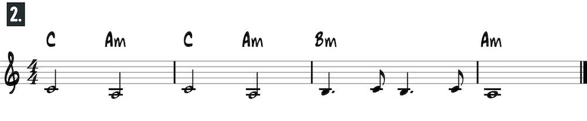
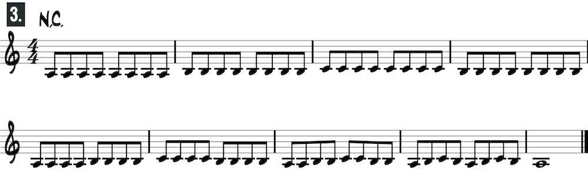
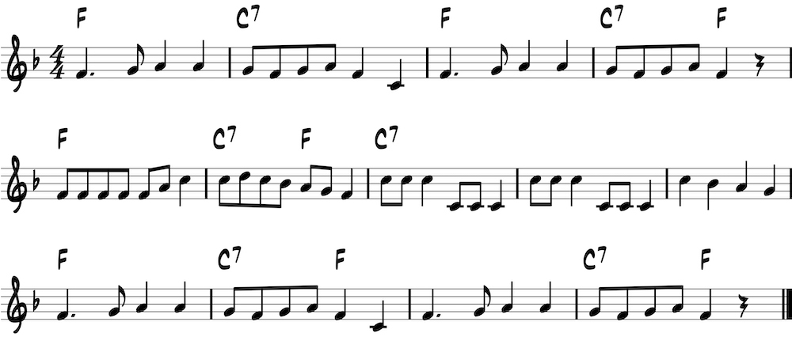
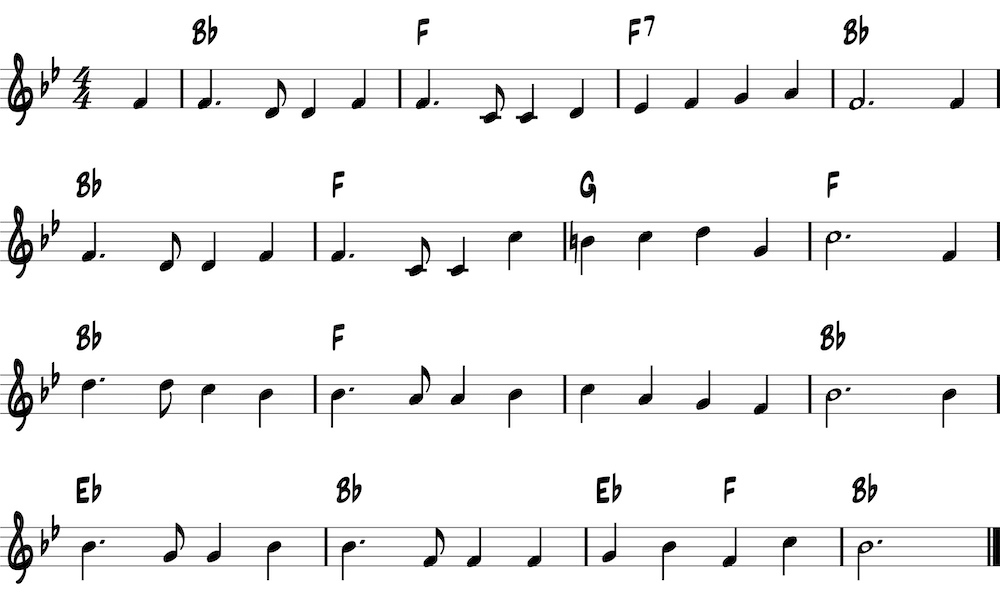
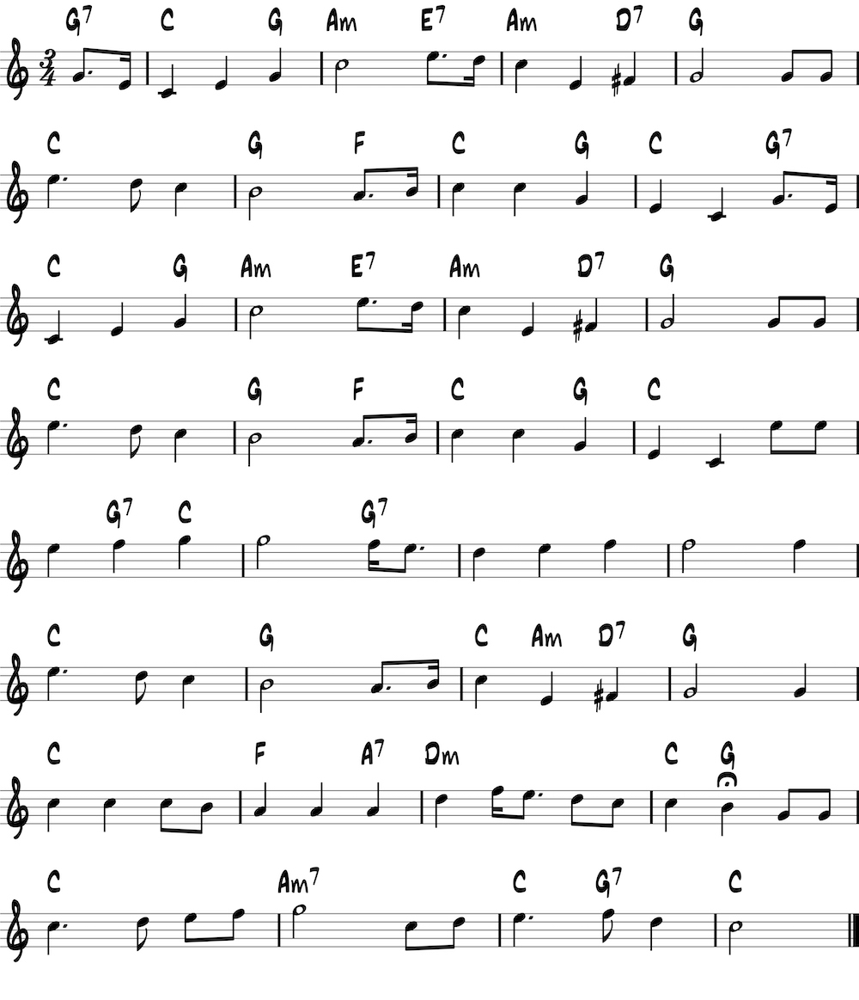
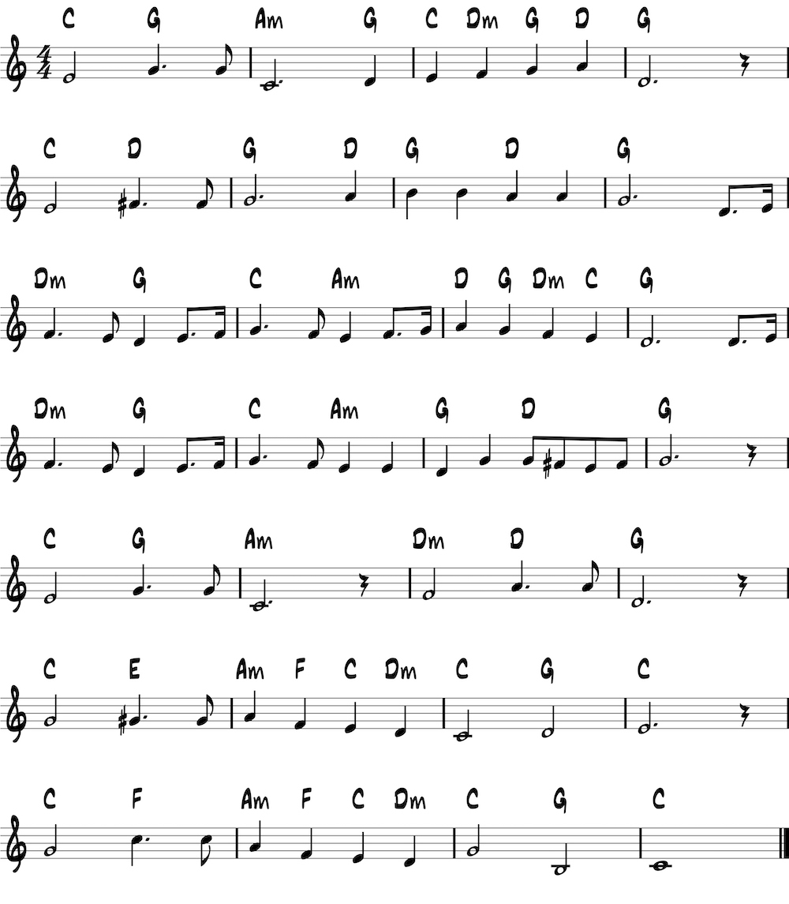

<h1>Fifth string: open position</h1>
<p>Play B on the second fret with the second finger and C on the third fret with the third finger.</p>




<h2>Alouette</h2>

<h2>America the Beautiful</h2>

<h2>The Star Spangled Banner</h2>

<h2>O Canada</h2>
